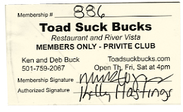
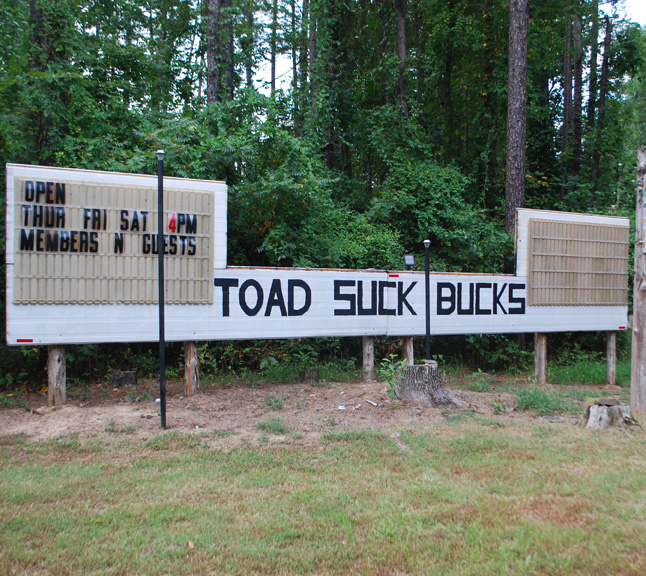

Wednesday, September the 7th, 2011
back to: title, date or indexes

Hooting Yard's global dominion is well-attested, and there are readers and listeners all over the world. Some are fortunate enough to live and breathe and have their being in places with fantastic names. Consider the reader who sent me a snap of his membership card for Toad Suck Buck's, a “restaurant and river vista” in Toad Suck, Arkansas. Toad Suck, I am told, is in a “dry” county, so in order to serve its customers with alcoholic beverages, Buck's is a “privite” club. I am eager to join, and I bet you are too. Meanwhile, I am thrilled to know there is a Toad Suck Branch of the Hooting Yard Fan Club.
